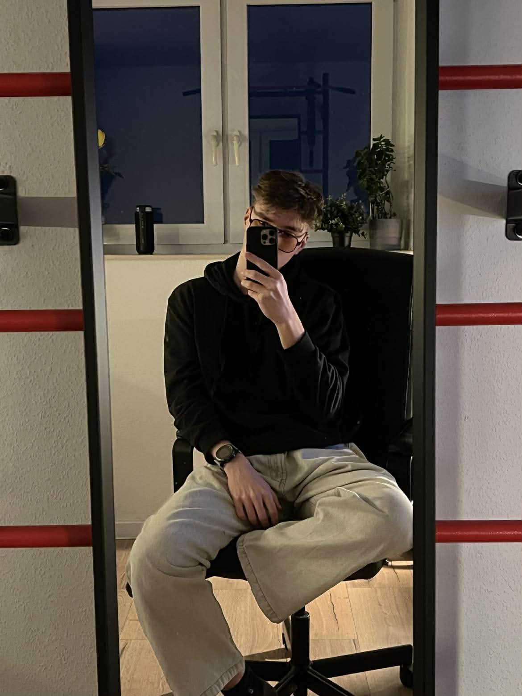
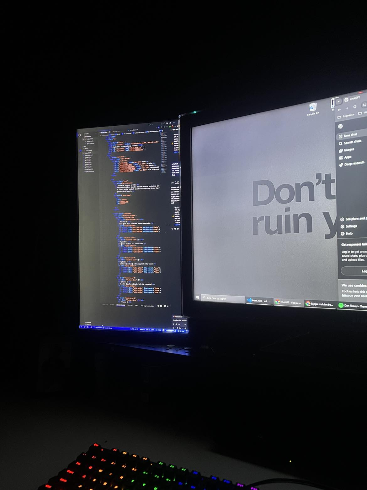
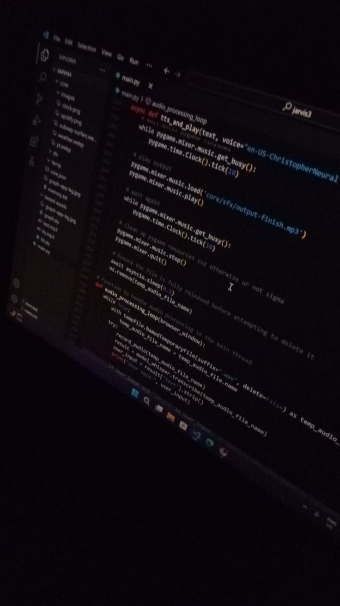
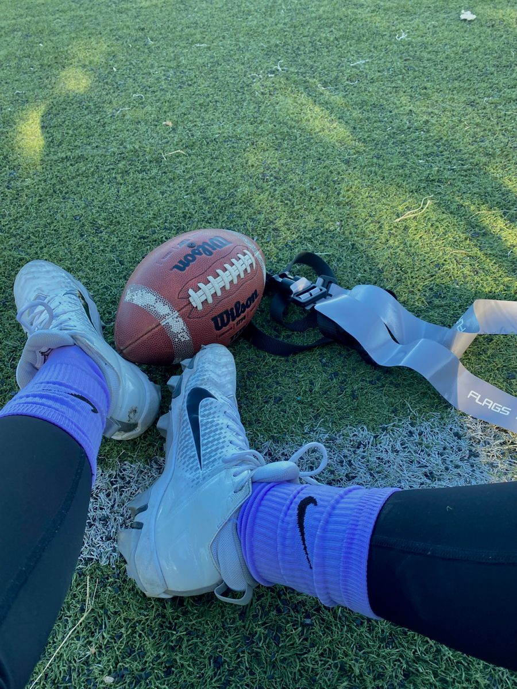
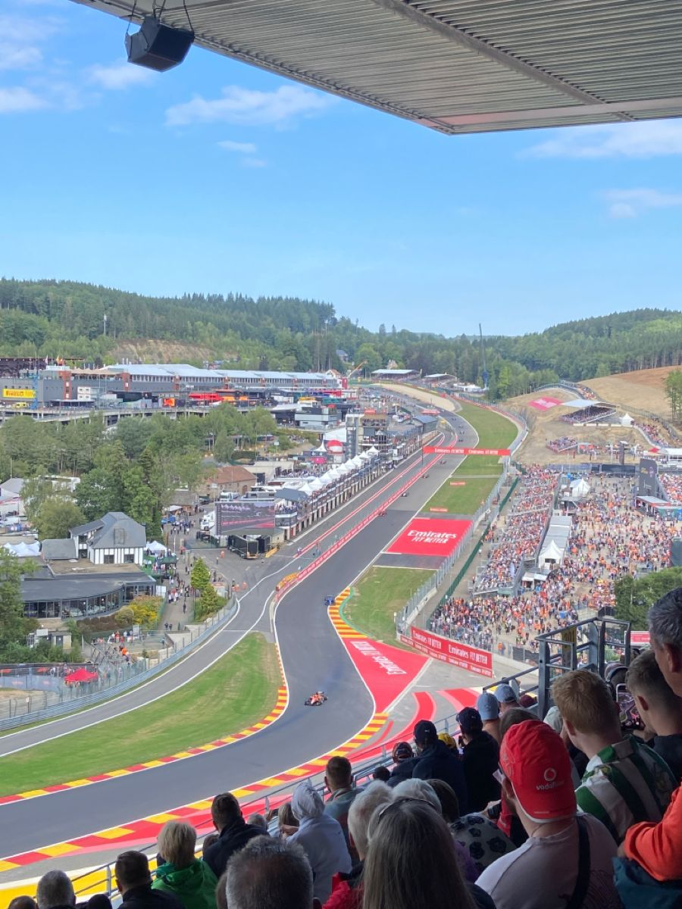
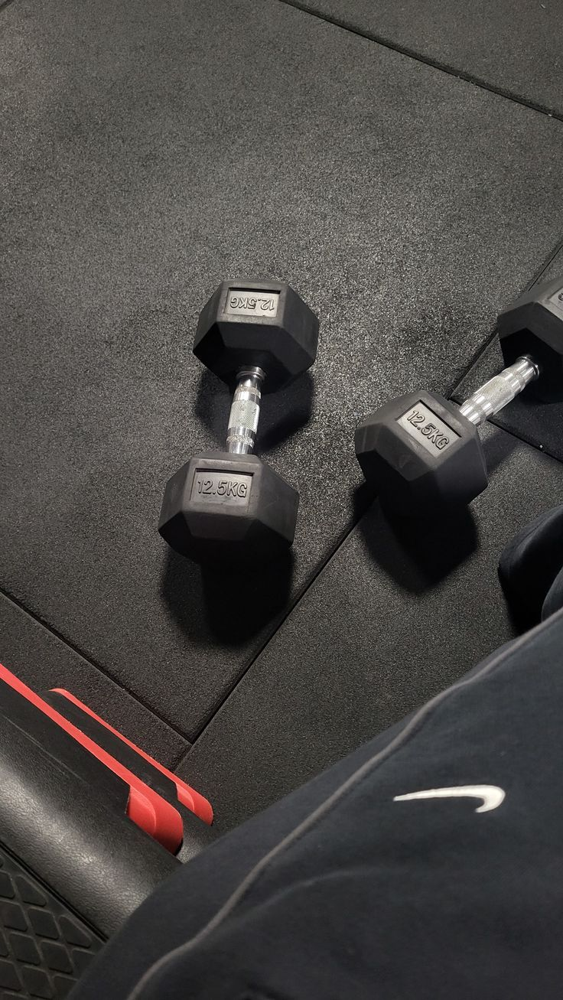

O mnie
Nazywam się Piotr Szpada. Jestem uczniem technikum informatycznego, o bardzo wielu pasjach i zainteresowaniach. Urodziłem się w Knurowie, 11 grudnia 2008 roku. Od tamtej pory, codziennie staram się eksperymentować i próbować nowych rzeczy. Na codzień interesują mnie niespotykane nieraz rzeczy, lecz zdarzają się także standardowe rzeczy, jak u większości osób. Moje zainteresowania nieraz wymagają ode mnie poświęcenia i dobrego zarządzania czasem, lecz nie jest to dla mnie problem, ponieważ doskonale sobie z tym radzę.







Dlaczego technikum informatyczne?
Od dziecka interesowałem się informatyką i technologiami. Zauważyłem, że to kierunek, który mnie ciekawi i w którym mogę rozwijać swoje umiejętności. Niestety, po jakimś czasie zauważyłem, że kierunek ten nie opiera się tylko i wyłącznie na programowaniu, które do dzisiaj jest jednym z moich hobby. Na dzień dzisiejszy zaprojektowałem i utworzyłem 4 w pełni funkcjonalne aplikacje internetowe.
Skąd się wzięły moje pasje?
Jak powiedziałem wcześniej, od zawsze próbowałem eksperymentować i próbować nowych rzeczy. Moje pasje zaczęły się rozwijać w młodym wieku, kiedy lubiłem wynajdować niekoniecznie standardowe pasje. Wraz z tym jak zacząłem dorastać, zacząłem inwestować więcej czasu, żeby je rozwijać.


